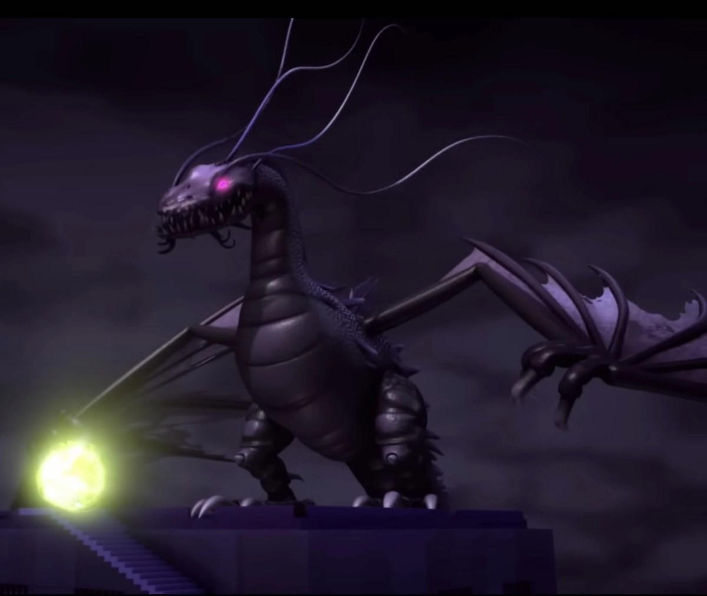
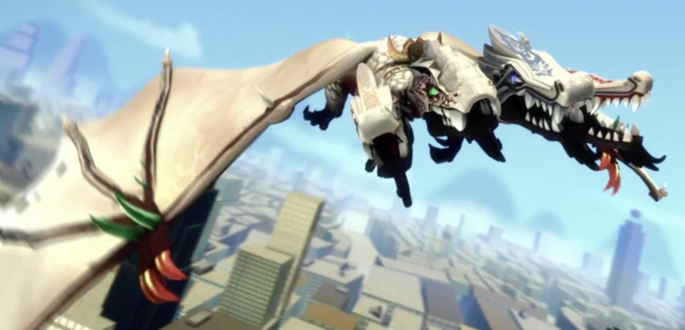

Cursed Spirit Bestiary
Complete monster stat blocks for Special Grade cursed spirits — traits, actions, bonus actions, reactions, and legendary actions, table-ready. These entries are GM material: the stat blocks below are not player-facing.
The Overlord, Dragon of Darkness

Ability Scores · Saves · Skills
STR 28 (+9), DEX 18 (+4), CON 26 (+8), INT 20 (+5), WIS 18 (+4), CHA 24 (+7). Saves: Str +16, Con +15, Wis +11, Cha +14. Skills: Perception +11, Stealth +11, Intimidation +14.
Resistances · Immunities · Senses
Damage Resistances: cold, necrotic. Condition Immunities: charmed, frightened, poisoned. Senses: darkvision 120 ft., passive Perception 21. Languages: Common, Abyssal, telepathy 120 ft.
Field notes. Subject: hunger, wearing a dragon's shape. Three truths govern the Overlord. First: it does not hate the light; it is simply unfinished where the light is. Darkness is not its element but its appetite — it eats illumination the way a fire eats air, and where it has fed, nothing casts a shadow because there is nothing left to cast one. Second: corruption is digestion begun early. The Blight Seed is the Overlord swallowed in advance, a mouth planted inside the prey, waiting for the command to bite. Third: it is vulnerable the way all hungers are vulnerable — to the one thing it cannot eat. Golden light does not burn it; it refutes it.
Legendary Resistance · 3/Day
If the Overlord fails a saving throw, it may choose to succeed instead.
Bane of Light
Radiant damage ignores the Overlord's resistances. Taking radiant damage suppresses its Umbral Regeneration until the end of its next turn.
Umbral Regeneration
The Overlord regains 20 HP at the start of its turn while in dim light or darkness.
Shroud of the End
Dim light within 60 feet of the Overlord becomes darkness. Nonmagical flames within 60 feet are snuffed.
Devour the Fallen
When a creature within 60 feet of the Overlord drops to 0 hit points, the Overlord devours its shadow and regains 25 HP.
Seeded
A seeded creature carries a Blight Seed. It may use an action to purge the seed, ending the effect on a successful Constitution saving throw (DC 23).
Actions
Multiattack. The Overlord makes one Bite attack and two Claw attacks.
Bite. Melee weapon attack: +17 to hit, reach 15 ft., one target. Hit: 35 (4d12 + 9) piercing damage plus 13 (3d8) necrotic damage.
Claw. Melee weapon attack: +17 to hit, reach 10 ft., one target. Hit: 25 (3d10 + 9) slashing damage.
Tail. Melee weapon attack: +17 to hit, reach 20 ft., one target. Hit: 28 (3d12 + 9) bludgeoning damage, and the target must succeed on a Strength saving throw (DC 23) or be knocked prone.
Breath of the End (Recharge 5–6). The Overlord exhales living darkness in a 90-foot cone. Each creature in the area must make a Dexterity saving throw (DC 23), taking 90 (20d8) necrotic damage on a failed save, or half as much on a successful one. The cone's area becomes magical darkness for 1 minute. A creature that fails the save is also seeded.
Raise the Stone Army (Recharge 6). The Overlord animates up to three Stone Warriors from earth or stone within 60 feet. Each warrior uses this stat block: Medium construct; AC 15; HP 60; speed 30 ft.; slam +10 to hit, 18 (2d8 + 5) bludgeoning damage; immune to poison and to the charmed and frightened conditions. Warriors act on the Overlord's initiative and obey its telepathic commands, requiring no action. They last until destroyed or for 1 hour.
Bonus Actions
Detonate Seeds. The Overlord detonates any number of its seeds in creatures within 120 feet. Each seeded creature takes 27 (6d8) necrotic damage, or half as much on a successful Constitution saving throw (DC 23).
Devour Shadow. One seeded creature within 60 feet takes 13 (3d8) necrotic damage, and the Overlord regains hit points equal to the damage dealt.
Reactions
Devour Magic (3/Day). When the Overlord is targeted by a spell or cursed technique, it makes a Charisma check against a DC of 10 + the effect's level. On a success, the effect is negated and the Overlord regains 15 HP.
Legendary Actions · 3/Round
The Overlord can take 3 legendary actions, choosing from the options below. Only one legendary action can be used at a time, and only at the end of another creature's turn. The Overlord regains spent legendary actions at the start of its turn.
Claw (1 action). The Overlord makes one claw attack.
Wing Buffet (2 actions). Each creature within 20 feet must make a Dexterity saving throw (DC 23), taking 18 (2d8 + 9) bludgeoning damage and being knocked prone on a failed save. The Overlord may then fly up to 40 feet.
Seed the Darkness (2 actions). One creature within 60 feet must succeed on a Wisdom saving throw (DC 23) or become seeded.
Eclipse (3 actions). Magical darkness fills a 120-foot radius centered on the Overlord until the start of its next turn. The Overlord's own darkvision does not pierce this darkness — it hunts blind in its own night, by design.
GM counsel. Open with Breath of the End: seed the party, darken the field, then Detonate Seeds while the Stone Army screens. Spend Eclipse when the party clusters — but remember it blinds the Overlord too, so it will guess, listen, and devour. The intended answer is radiant light: Bane of Light is the one true weakness, and a party with no radiant source should be telegraphed one (a golden relic, a Dawn-domain sorcerer, the Nya rule) before this fight, not during it. Hook: the Overlord cannot eat golden light — anything the party can frame as pure creation frightens it the way nothing else does.
The Ultra Dragon

Ability Scores · Saves · Skills
STR 30 (+10), DEX 16 (+3), CON 28 (+9), INT 14 (+2), WIS 20 (+5), CHA 18 (+4). Saves: Str +17, Dex +10, Con +16, Wis +12. Skills: Perception +12 (with advantage — four heads).
Resistances · Immunities · Senses
Damage Resistances: fire, cold, lightning. Condition Immunities: charmed, frightened. The Ultra Dragon cannot be surprised. Senses: darkvision 120 ft., passive Perception 22. Languages: understands Common and Draconic; telepathy 60 ft. (simple concepts only).
Field notes. Subject: loyalty, with four heads. The Ultra Dragon is the gentlest catastrophe I have catalogued. Each head is a complete dragon — Flame the fierce, Spark the quick, Frost the patient, Stone the stubborn — and yet there is one heart between them, and it has decided, permanently, that certain small people are its people. Understand this before anything else: the Ultra Dragon does not fight for territory, hunger, or pride. It fights the way a wall stands. If you must face it, know that you are not fighting a beast. You are fighting someone's decision to be protected.
Legendary Resistance · 3/Day
If the Ultra Dragon fails a saving throw, it may choose to succeed instead.
Four Heads, One Heart
The Ultra Dragon has advantage on saving throws against being blinded, deafened, stunned, or knocked unconscious.
Elemental Hearts
Each head is attuned to one element: Flame breathes fire, Spark breathes lightning, Frost breathes cold, Stone breathes bludgeoning force.
Loyal Bond
The Ultra Dragon can bond with up to four creatures through a 1-hour ritual, or at the GM's discretion through a single act of proven loyalty. Bonded creatures may ride it in flight.
Actions
Multiattack. The Ultra Dragon makes two Bite attacks (each from a different head) and one Tail attack.
Bite. Melee weapon attack: +17 to hit, reach 15 ft., one target. Hit: 29 (3d12 + 10) piercing damage.
Tail. Melee weapon attack: +17 to hit, reach 20 ft., one target. Hit: 26 (3d10 + 10) bludgeoning damage, and the target must succeed on a Strength saving throw (DC 23) or be knocked prone.
Elemental Breath (Recharge 5–6). Two heads breathe: two 60-foot cones, in any directions. Each creature in a cone must make a Dexterity saving throw (DC 23), taking 36 (8d8) damage of that head's element on a failed save, or half as much on a successful one. Weave: if both cones cover the same area, add a rider — Flame + Frost: blinding steam (Constitution DC 23 or blinded for 1 round); Spark + Stone: jagged shrapnel (+9 (2d8) piercing damage); Flame + Spark: firestorm (targets have disadvantage on the Dexterity save).
Fourfold Exhalation (1/Day). All four heads breathe at once: four 60-foot cones, each dealing 36 (8d8) damage of its head's element. Each creature in a cone must make a Dexterity saving throw (DC 23), taking half damage on a success.
Bonus Actions
Protective Wing. One bonded rider gains +5 AC until the start of the dragon's next turn.
Reactions
Stormheart Retaliation. When the Ultra Dragon is damaged by a creature within 60 feet, one head breathes at that creature: a 30-foot cone dealing 27 (6d8) damage of that head's element, Dexterity DC 23 for half.
Interpose. When a bonded creature within 30 feet is hit by an attack, the Ultra Dragon takes the hit instead.
Legendary Actions · 3/Round
The Ultra Dragon can take 3 legendary actions, choosing from the options below. Only one legendary action can be used at a time, and only at the end of another creature's turn. The Ultra Dragon regains spent legendary actions at the start of its turn.
Bite (1 action). The Ultra Dragon makes one bite attack.
Wing Attack (2 actions). Each creature within 20 feet must make a Dexterity saving throw (DC 23), taking 18 (3d8 + 4) bludgeoning damage and being knocked prone on a failed save. The dragon may then fly up to 45 feet.
Elemental Motes (2 actions). The dragon hurls two ranged elemental strikes: +15 to hit, range 120 ft., each dealing 13 (3d8) damage, each of a different element.
GM counsel. The Ultra Dragon is a protector, not a predator: it Interposes, shields riders with Protective Wing, and spends its breath breaking formations rather than chasing kills. Run it as an escort objective or a bonded ally — it is at its best carrying the party through something worse. If the party must fight it, the fight is a tragedy, not a hunt: it will not flee, and it will spend itself to the last head. Hook: imprinting. A party that proves loyalty — shielding it, refusing to abandon it, feeding its heads — can earn a Loyal Bond without a fight. Four heads remember kindness four times over.